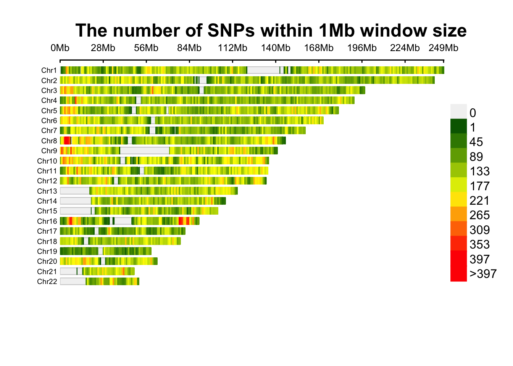
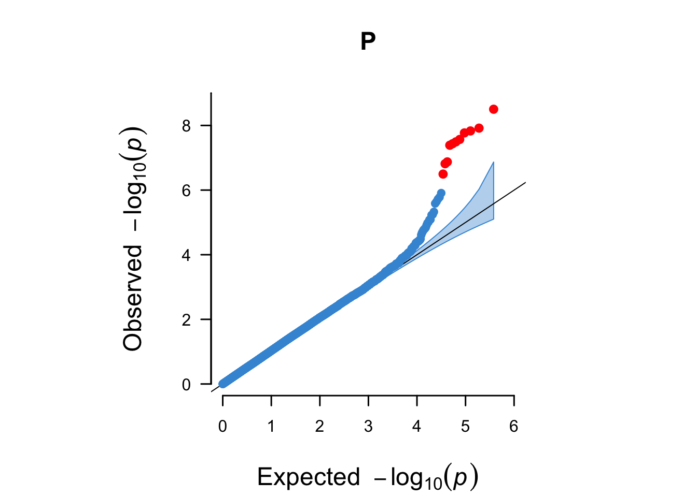
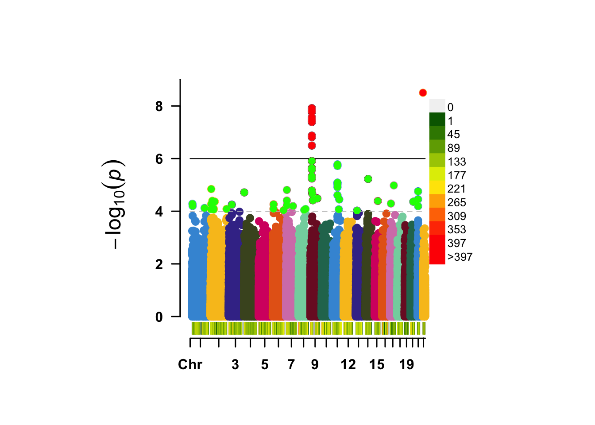
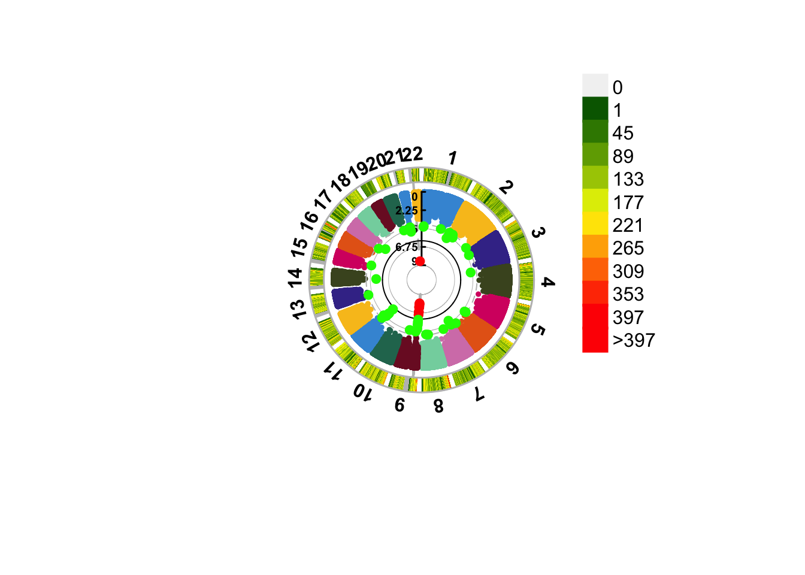

R
wtccc1_assoc <- data.table::fread("wtccc1/wtccc1_qc_log_covar_pca.assoc.logistic")Now that we have explored and cleaned the data, we are ready for some association testing. However, it would be great to have some PCs to correct for. We can use PLINK for that too.
Terminal
plink --bfile wtccc1/wtccc1_extrclean --exclude wtccc1/fail-ancestry-QC.txt --pca --out wtccc1/wtccc1_extrcleanLet’s add those PCs to the covariates-file.
Terminal
echo "IID PC1 PC2 PC3 PC4 PC5 PC6 PC7 PC8 PC9 PC10 PC11 PC12 PC13 PC14 PC15 PC16 PC17 PC18 PC19 PC20" > wtccc1/wtccc1_qc.pca
cat wtccc1/wtccc1_extrclean.eigenvec | awk '{ print $2,$3,$4,$5,$6,$7,$8,$9,$10,$11,$12,$13,$14,$15,$16,$17,$18,$19,$20,$21,$22}' >> wtccc1/wtccc1_qc.pca
perl ~/data/shared/scripts/mergeTables.pl --file1 wtccc1/wtccc1_qc.pca --file2 ~/data/shared/wtccc1/wtccc1.covar --index IID --format NORM > wtccc1/wtccc1_qc.covar_pcaExciting, now we are ready to perform a GWAS on CAD in WTCCC1. This may take some time (when I tested it, it took at least 5 minutes), so it’s a perfect moment to take a break, stretch your legs and get a coffee.
Terminal
plink --bfile wtccc1/wtccc1_qc --logistic sex --covar wtccc1/wtccc1_qc.covar_pca --out wtccc1/wtccc1_qc_log_covar_pcaAfter you ran the association analysis, you’re ready to process the data and take a first look at the results. First, we prepare the raw output.
R
wtccc1_assoc <- data.table::fread("wtccc1/wtccc1_qc_log_covar_pca.assoc.logistic")R
dim(wtccc1_assoc)
wtccc1_assoc[1:9, 1:9]
wtccc1_assoc_sub <- subset(wtccc1_assoc, TEST == "ADD")
wtccc1_assoc_sub$TEST <- NULL
temp <- subset(wtccc1_FRQ, select = c("SNP", "A2", "MAF", "NCHROBS"))
wtccc1_assoc_subfrq <- merge(wtccc1_assoc_sub, temp, by = "SNP")
temp <- subset(wtccc1_LMISS, select = c("SNP", "callrate"))
wtccc1_assoc_subfrqlmiss <- merge(wtccc1_assoc_subfrq, temp, by = "SNP")
head(wtccc1_assoc_subfrqlmiss)
# Remember:
# - that z = beta/se
# - beta = log(OR), because log is the natural log in r
wtccc1_assoc_subfrqlmiss$BETA = log(wtccc1_assoc_subfrqlmiss$OR)
wtccc1_assoc_subfrqlmiss$SE = wtccc1_assoc_subfrqlmiss$BETA/wtccc1_assoc_subfrqlmiss$STAT
wtccc1_assoc_subfrqlmiss_tib <- dplyr::as_tibble(wtccc1_assoc_subfrqlmiss)
col_order <- c("SNP", "CHR", "BP",
"A1", "A2", "MAF", "callrate", "NMISS", "NCHROBS",
"BETA", "SE", "OR", "STAT", "P")
wtccc1_assoc_compl <- wtccc1_assoc_subfrqlmiss_tib[, col_order]
dim(wtccc1_assoc_compl)
head(wtccc1_assoc_compl)
wtccc1_assoc_complsub <- subset(wtccc1_assoc_compl, select = c("SNP", "CHR", "BP", "P"))You could visualize these results with the code below.
R
library("CMplot")
CMplot(wtccc1_assoc_complsub,
plot.type = c("d", "c", "m", "q"), LOG10 = TRUE, ylim = NULL,
threshold = c(1e-6,1e-4), threshold.lty = c(1,2), threshold.lwd = c(1,1), threshold.col = c("black", "grey"),
amplify = TRUE,
bin.size = 1e6, chr.den.col = c("darkgreen", "yellow", "red"),
signal.col = c("red", "green"), signal.cex = c(1,1), signal.pch = c(19,19),
file.output = FALSE, file = "png",
main = "", dpi = 300, verbose = TRUE)This would lead to the following graphs.




How many peaks do you see in the Manhattan? As you learned earlier, an important step after a GWAS is to identify the independent hits by “clumping” the results. We will just use the defaults, but please take a note of all the options here https://www.cog-genomics.org/plink/1.9/postproc#clump.
First, you want to save this new concatenated and filtered resulst file.
R
data.table::fwrite(wtccc1_assoc_compl,
file = "wtccc1/wtccc1_assoc_compl.txt.gz",
sep = " ",
na = "NA",
row.names = FALSE, col.names = TRUE,
quote = FALSE,
showProgress = TRUE, verbose = TRUE)Next, you can run this command to clump the results. Note that PLINK can handle .gz files.
Terminal
plink --bfile wtccc1/1kg_phase1_wtccc1 --allow-extra-chr --clump wtccc1/wtccc1_assoc_compl.txt.gz --clump-snp-field SNP --clump-field P --clump-p1 5.0e-8 --clump-p2 0.05 --clump-r2 0.05 --clump-kb 1000 --out wtccc1/wtccc1_qc_log_covar_pca.assoc.logistic.clumped --clump-verbose --clump-annotate CHR,BP,A1,A2,MAF,callrate,NMISS,NCHROBS,BETA,SE,OR,STATNow you will have a list of all the independent SNPs, i.e. the genetic loci, that are associated to the trait.
Terminal
cat wtccc1/wtccc1_qc_log_covar_pca.assoc.logistic.clumpedQuestion: How many independent hits did you find?
You reached an important milestone.
You recreated the work by the whole WTCCC1-team that took them years in just one afternoon!
Wow. Take a pause. And realize what you’ve done.
Back then there wasn’t much on analyses after a GWAS, nowadays there are many post-GWAS analyses methods. We will cover them in the next Chapter 15.